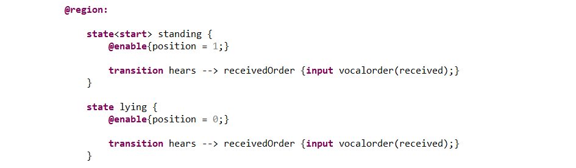
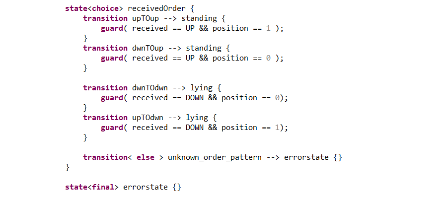
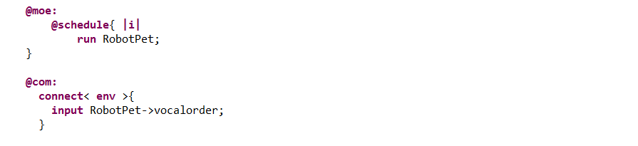
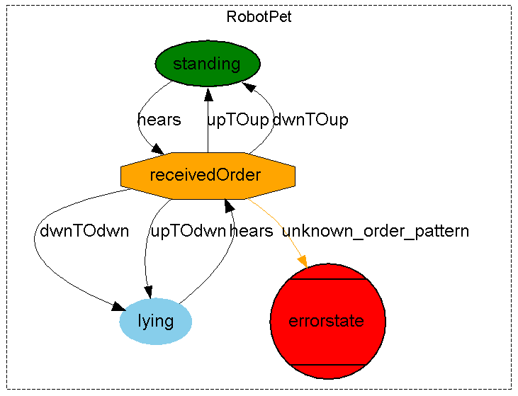
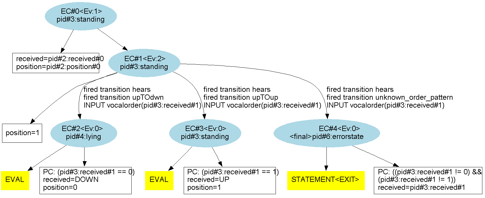
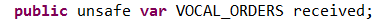
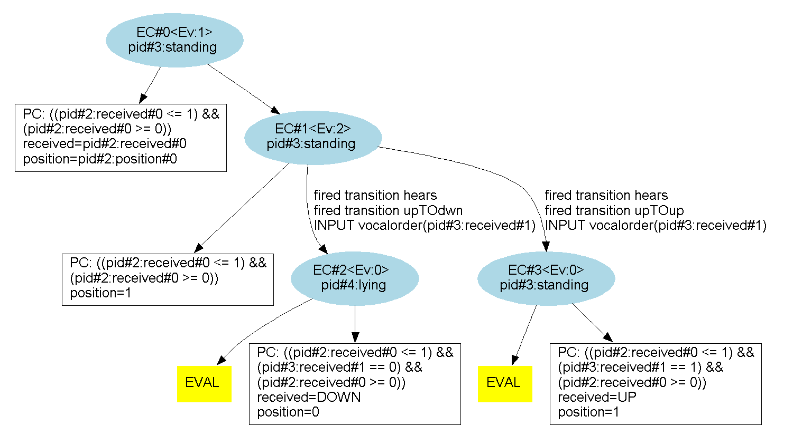

In the following example, we will model a very simple robot pet dog.
The robot can stand or lie on the ground.
The robot can execute basic orders :
Firstly, we define the statemachine with :
We then define the "standing" and "lying" states. The code inside the "@enable" brackets is executed each time the parent state is entered. Therefore the position variable is always updated. To leave any of the states, the robot dog waits for an input on the "vocalorder" port. When received, the variable "received" is updated as the new current order.
We then define the "receivedOrder" state with the flag "choice". Such a state is an unstable state that will be immediately evaluated by Diversity so that the machine will go to a target state that is the result of a choice.
In a "choice" state, we can define an "else" transition that will be taken by default if the requirements of the guards on the other transitions are not met.
In this example, the default transition leads to a "final" error state that will stop the evaluation if reached. For instance, this allows to verify if all the possible combinations of orders and parameters are well taken into account.
Finally, we program the simulation by running the machine RobotPet. And we connect its input ports to the environment that will simulate a panel of possible input.
We can then generate the following graph of the state-machine :
We will then look for possible paths that would lead to the error state. A first approach is to use the "Exploration" feature. The generated "phase1_execution_graph" with 2 steps is the following :
We can clearly see the presence of the "unknown_order_pattern" and that we can reach the "errorstate" which is not a good sign. Indeed, it should be impossible considering how we've defined the system. However, when looking at the conditions of arrival we see that we must have :
((pid#3:received#1 != 0) && (pid#3:received#1 != 1))
This means that the received order must be neither "UP" nor "DOWN". But the only possible values for "received" are "UP" and "DOWN". Therefore, this boolean is always false : we can never reach this "errorstate".
Even though we're reassured, we still think that it's weird that the "errorstate" even appears on the exploration graph. Indeed, why displaying it when it can never actually be reached. The reason is that Diversity, being a symbolic engine, it never actually computes the boolean.
However there are means to make Diversity realize that the "errorstate" cannot be reached. We can use the "unsafe" modifier on the "received" variable to compel constraint checking on expressions involving it :
Running the "Exploration" feature with the same parameters, the generated "phase1_execution_graph" becomes the following :
